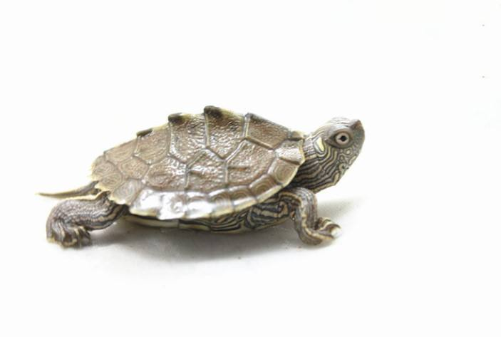
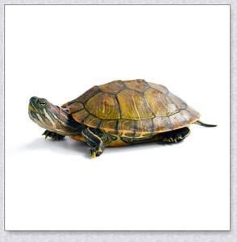

腐皮病 症状：肉眼可见病龟的患部溃烂，表皮发白。 治疗：乌龟腐皮，可以多晒太阳，泡盐水。若腐皮的情况比较严重，需要用碘伏浸泡30分钟，同时还要在腐烂的地方涂抹金霉素等药膏，一天可以涂1-2次。其次乌龟腐皮还可用一些消炎外用药膏来擦拭乌龟腐皮处。 预防：充足的日照、人为的缩小昼夜温差。秋季气温正适合多种微生物的生长，适合的清洗饲养环境，或者消消毒还是要的。 |
绿脓假单胞菌败血症 症状：食欲停止，呕吐、下痢，褐色或黄色脓样粪便。 治疗：肌注链霉素，每天1次。剂量按龟体重大小而不同。 预防：注意龟的环境卫生和饲料饮用水的清洁. |
疥疮病 症状： 颈、四肢有一或数个黄豆大小的白色疥疮，用手挤压四周，有黄色、白色的豆渣状内容物。 |
越冬死亡症 症状：冬眠前，龟的四肢瘦弱、肌肉干瘪。用手拿龟，感觉龟较轻。水栖龟类的龟经常漂浮水面。 |
白眼病 症状：病龟的眼部发炎充血、眼睛肿大。眼角膜和鼻粘膜因眼的炎症而糜烂，眼球的外部被白色的分泌物掩盖，眼睛内部存在炎症。病龟常用前肢擦眼部，行动迟缓，不再摄食。 治疗：给乌龟治疗白眼病，期间最好干养。可以用氯霉素眼药水治疗，每天三次，每次两滴，搭配金霉素眼药膏效果更好。也可以通过药浴来治疗，每升水加15毫克左右的呋喃西林，平时饲养乌龟注意勤换水。 预防：施用漂白粉或生石灰以改良水质和进行水体消毒，养龟的器皿要消毒，在乌龟发病季节投喂动物肝脏等龟喜吃的精饲料，增加营养，增强抵抗力，减少疾病发生。 |
|  | 乌龟常见病 |  | ||
|---|---|---|---|---|
龟摩根氏变形杆菌病 症状：龟发病初期，鼻孔和口腔中有大量的白色透明泡沫状粘液，后期流出黄色粘稠状液体。龟的头部常伸出体外，不食且饮水较少。龟常爬动不安。 治疗：发现病龟后立即隔离饲养。肌注氯霉素、卡那霉素、链霉素，每千克20毫克。每天1次，连续3天。 预防：施用漂白粉或生石灰以改良水质和进行水体消毒，养龟的器皿要消毒。注意水质勤快换水。 |
缺钙 症状：壳软、变形。 治疗：改善食物，尽可能的丰富食物种类，水龟可以多喂带骨的小鱼，带壳的小虾，陆龟可以喂仙人掌，或在龟粮中掺入钙粉，添加含钙的零食，最常见的是虾干，可以和龟粮搭着喂。 预防：多晒太阳，如果自然光照不足的话，可以通过UV灯来补，单独添加营养品，补充微量元素，也可以在食物中直接添加维生素和矿物质。 |
肺炎 |
烂甲病 |
肠胃炎 |